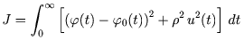
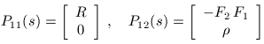
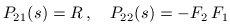
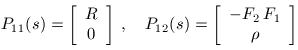
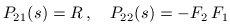

| DirectSD Toolbox |
  |
Deterministic problem
The augmented continuous-time plant of the standard
system must incorporate all shaping filters
(generators of external signals) and weighting functions.
For deterministic problems, the input signal is a scalar
unit impulse (Dirac delta-function).
Consider the ship course tracking system with the block-diagramm
shown in the figure:
 Here continuous-time plant is represented by two linear
blocks with transfer functions F1(s)
(actuator) and F2(s) (linearized model
of the ship). The signals are:
Here continuous-time plant is represented by two linear
blocks with transfer functions F1(s)
(actuator) and F2(s) (linearized model
of the ship). The signals are:
- φ0 - desired course
- φ - actual course
- e - tracking error
- u - control signal
- δ - rudder angle
It is required to minimize the cost function

under unit step reference signal φ0(t)=1(t).
The latter signal can be described by signal generator
R(s)=1/s, where s denotes the variable in
Laplace transform.
Introducing the output vector ε = [e ρu]', this cost
can be written in the standard form:
 Therefore, the generalized plant can be described by
operator equations
Therefore, the generalized plant can be described by
operator equations
 where w(t) is a unit impulse (Dirac delta-function) and


where w(t) is a unit impulse (Dirac delta-function) and


|
|
Previous page
| |
Next page
|
|
© 1999-2006 K. Polyakov.